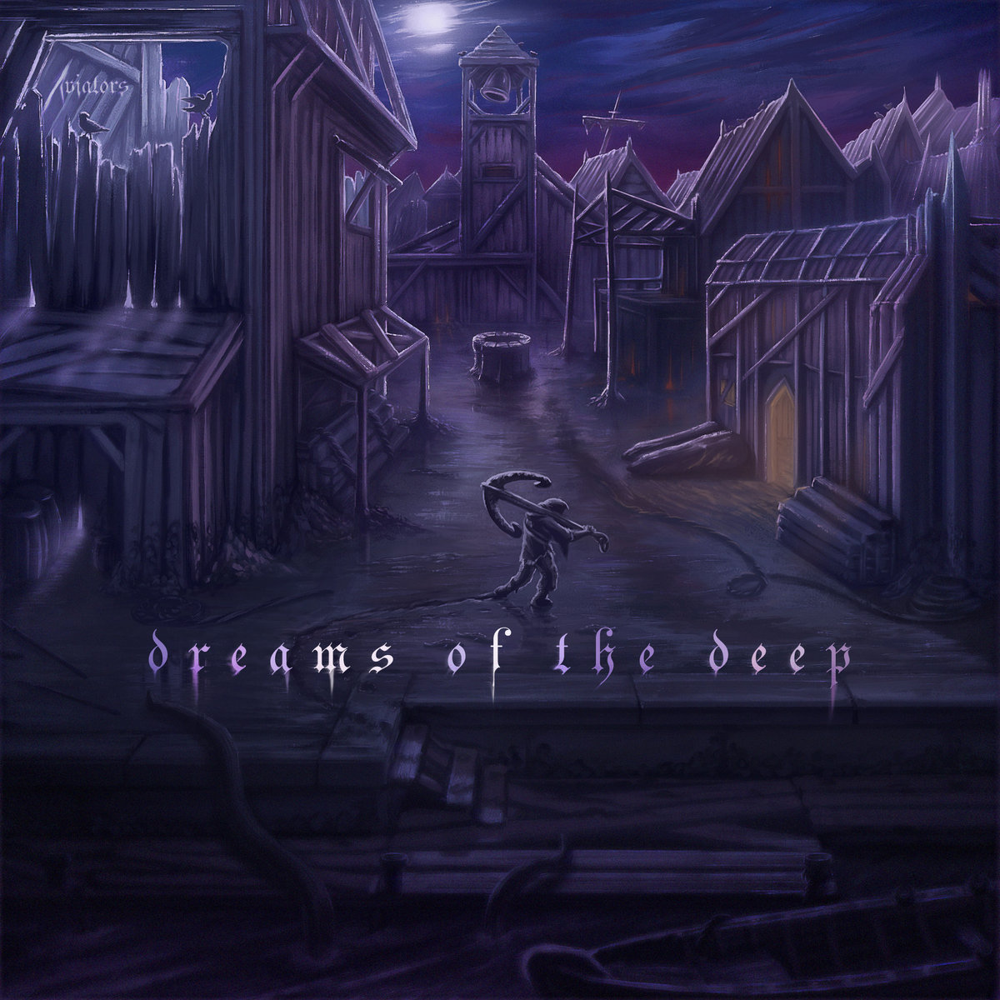
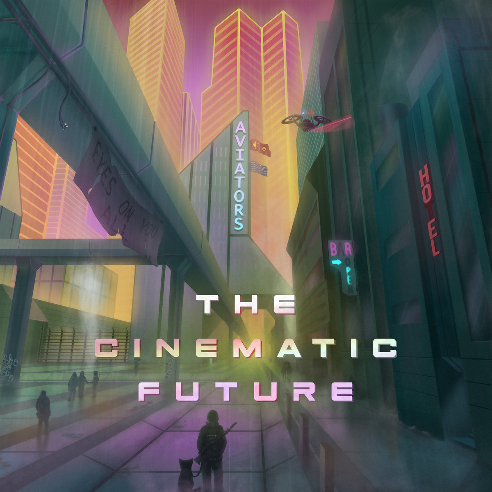
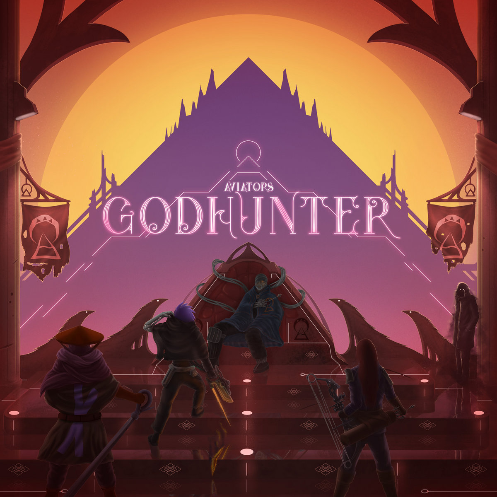
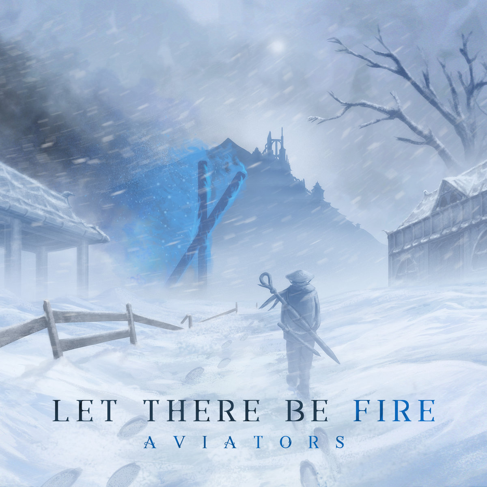
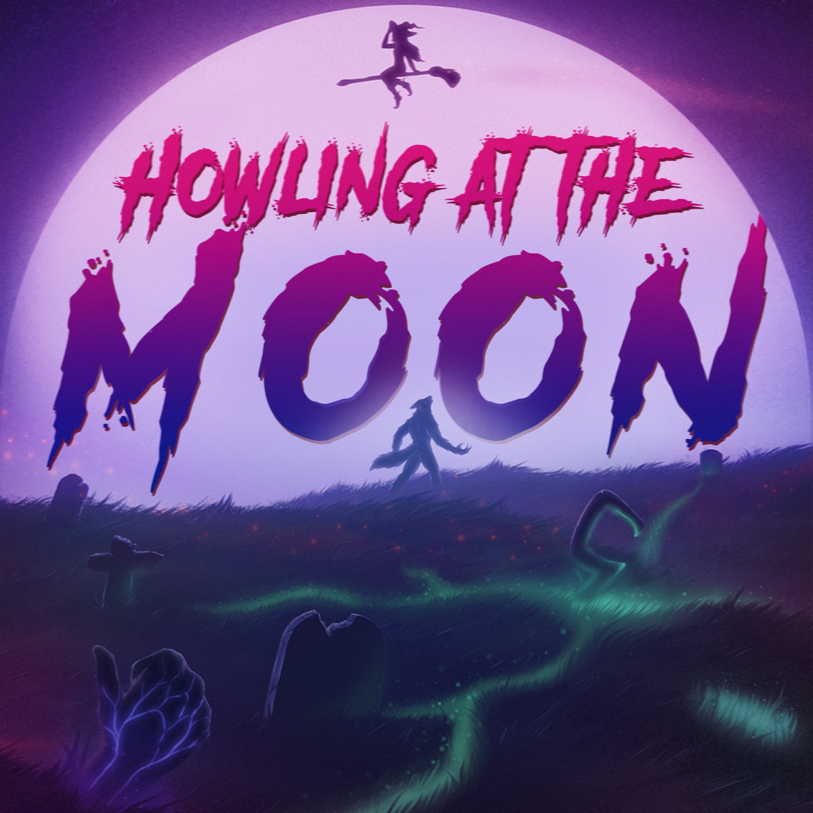
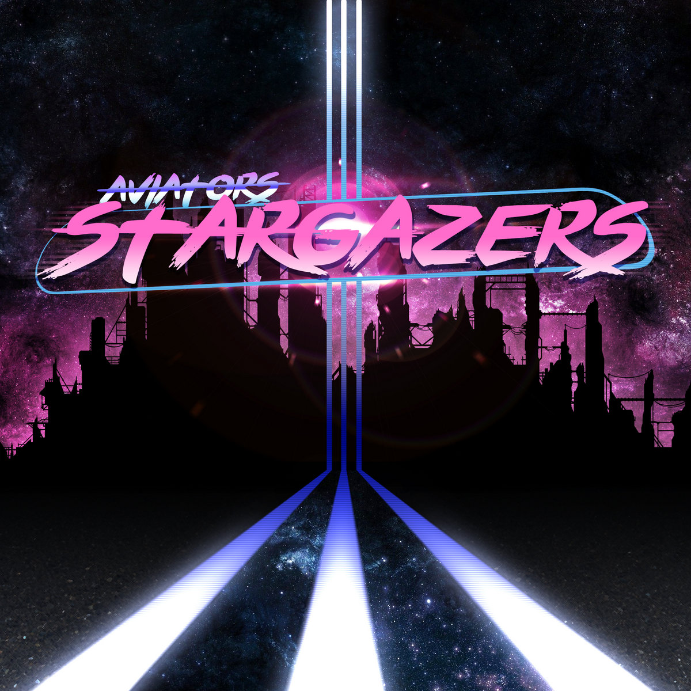
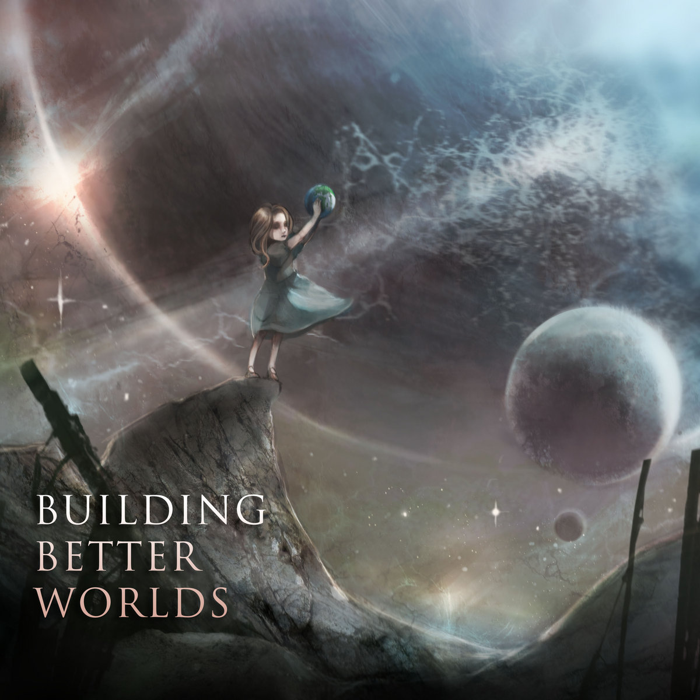

Aviators — музыкальный проект Тайлера Шоу, американского инди-музыканта, специализирующегося на кинематической электронике.
Также он пишет в жанрах альтернативной, оркестральной и электронной танцевальной музыки. Является композитором игры "Vulpine".
Modern Mythology Cборник рассказов, каждый из которых посвящён «монстру этой недели». Вампиры, демоны и боги — все они порознь и вместе проживают свой путь от не такого уж и далёкого прошлого до вполне ближайшего будущего. Через истории ужасов и сказочной фантасмагории, а заодно и через истории любви и смерти, все эти рассказы образуют единое песенное целое.

Dreams of the Deep Альбом в жанрах фантастики и ужасов, в основе которого лежат произведения Говарда Филлипса Лавкрафта и других легендарных деятелей искусства. Hymns Of The Dark«Hymns of the Dark — EP» — это сборник ремиксов на песни с альбома «Dreams of the Deep».

The Cinematic Future В 2220 году Земля оказалась полностью скрыта многочисленными людскими сооружениями и большая часть народов отправилась в путешествие к звёздам, чтобы оставить своё прошлое позади. Два крупнейших города остаются последними оплотами человечества, но даже они пали перед лицом деспотических режимов: оставшиеся жители планеты вынуждены страдать, ища выход из сложившейся ситуации.«The Reimagined Future»Альбом ремиксов, переосмысление «The Cinematic Future» этого года. В этой версии двенадцати трекам с оригинала была дарована новая интерпретация — либо приглашёнными музыкантами, либо самим Aviators. Начнём же пугающее приключение с новейшего кавера на легендарную «Holding Out for a Hero»!

Godhunter Альбом о героях, которые стали свободными от оков времени, победили врагов пред собой и начали охоту за прежними богами. Взяв за основу события из "Dystopian Fiction", Вознесённые продолжат своё путешествие на пути к мести...

Let There Be Fire Фэнтезийный рок-альбом, основанный на одних из самых моих любимых путешествий по вымышленным мирам, таким как "Dark Souls", "Звёздные войны" и "Игра престолов". Варьируясь от оркестрального рока до созерцательного синт-попа, альбом перемещает вас в мир льда и тьмы и обещает, что однажды, к концу нашего приключения, огонь вспыхнет вновь.

Howling at the Moon Альбом создан в честь празднования хэллоуина. Я взял щепотку музыки 80-ых и написал некоторые песни в стиле синтвейва и альт-рока, повествующие о романе киборга-зомби ("Neon Sonata") и о борьбе оборотня, который попросту не хочет подстраиваться под реальный мир ("Howling at the Moon"), а также песни, вдохновлённые такими играми и фильмами как "Bloodborne" и "Оно" Стивена Кинга. Этот мини-альбом полон сногсшибательных ретро-мелодий, так что поспешите взять свой мешок с конфетами, даже если сейчас не октябрь!
Dystopian Fiction последняя в своей трилогии — рассказывает забытые истории, которые приведут своего слушателя к неизбежному восстанию против зла. Альбомная тематика песен включает обманчивое обожествление, разрушенную действительность и царство сновидений. В "Fading Light", "Here Come the Ravens" и других песнях с альбома позаимствованы темы и истории из популярных видеоигр и ТВ-шоу.

Stargazers постапокалиптический концептуальный альбом о восстановлении целой цивилизации после периода войн и начале всего заново. Темы являются непосредственным продолжением альбома 2014 года, "Building Better Worlds", а также представляют собой конфликты и их разрешения. В музыкальном плане альбом превращается в начало 90-ых под влиянием нью-вейва, благодаря песням, как "Oblivion" и "Losing Controls", повторяющим бас-гитарные гимны той эпохи.

Building Better Worlds альбом об однообразии, переменах и революции одновременно. Угнетатели строят свои лучшие миры, превращая их в тюрьму, а революционеры стремятся к свободе. Каждый строит свой лучший мир... Но для кого именно он лучший?